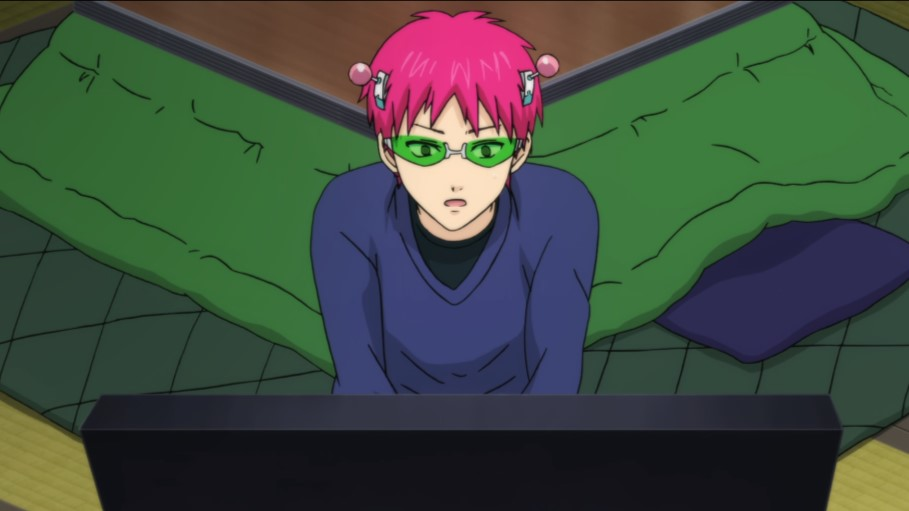

The Disastrous Life of Saiki K.
Kusuo Saiki is a high school student with an extraordinary secret—he possesses a wide array of psychic abilities, such as psychokinesis and teleportation. Despite his powers, he goes to great lengths to conceal them from everyone at school. Throughout the series, Kusuo finds himself in seemingly ordinary scenarios where he discreetly employs his powers to navigate through challenges.
Total Episodes: 50 - Completed

Click for progress
Last Episode Watched: Season 1 Episode 24
Up Next: Season 2 Episode 1
